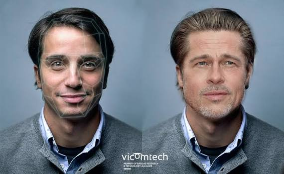
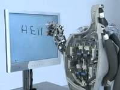

Como saber se é IA ou não?
Analise as proporções:
Mesmo que sejam realistas, continuam carecendo de detalhes pontuais como por exemplo, proporção exata, mãos de tamanhos diferentes, rosto com poucos detalhes ou estilizado como um desenho
Dê Zoom:
Por serem criadas a partir de outras várias imagens, é possível detectar diversas anomalias, por isso sempre dê zoom em caso de dúvidas

Atenção por onde essas imagens são veiculadas:
Por serem de fácil criação e por conta de sua qualidade crescente, busque saber de onde as imagens vieram, procure as fontes e sempre duvide até que a imagem se prove verdadeira através da pesquisa

Textos mais que perfeitos:
Como IA generativas são como corretores de texto ambulante, elas carecem de pequenos erros que nós cometemos, criam textos exagerademente polidos, com pouca variação de palavras, previsiveis por conta que a IA raramente varia no tamanho das frases

Pouco tato com a realidade:
Como IA não é um ser humano, ela não tem as mesmas nuances que alguem de carne e osso, carece de conhecimento cultural aprofundado, assim como é extremamante impessoal.